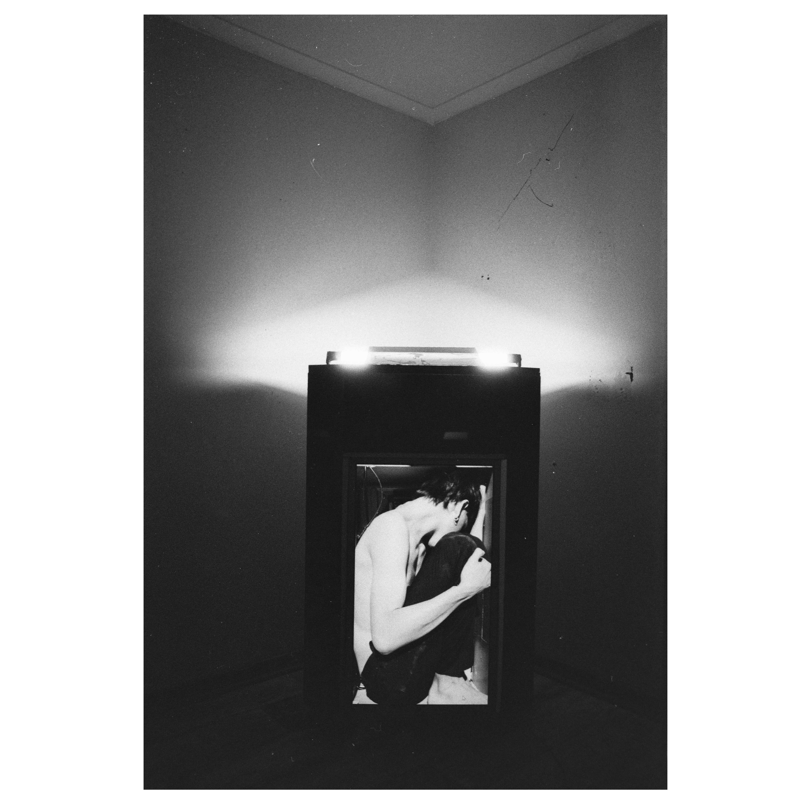
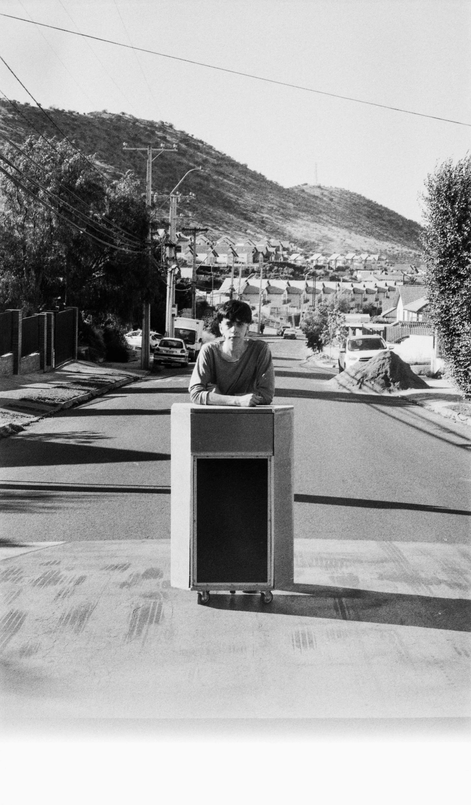
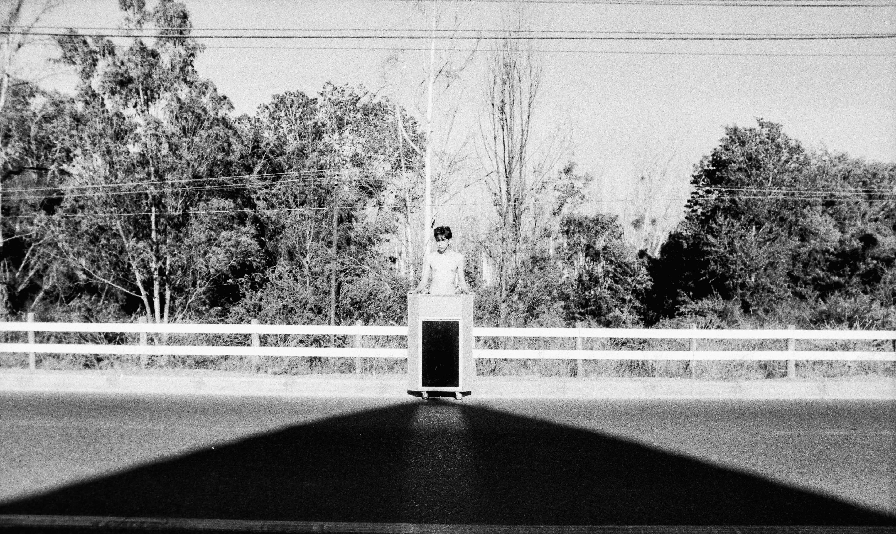
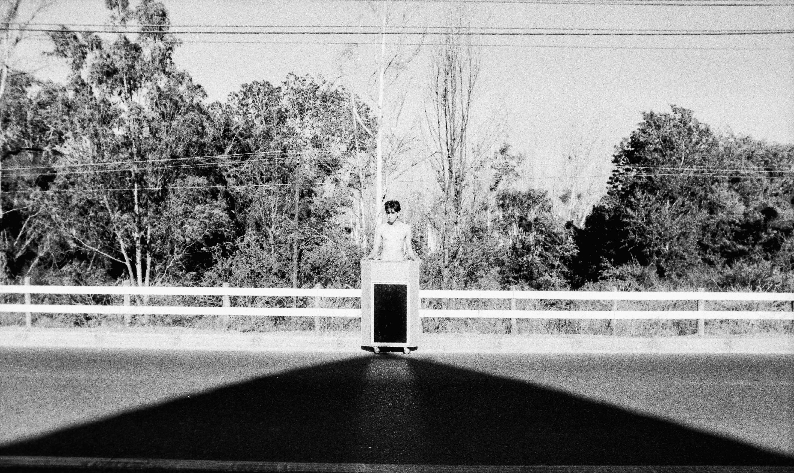
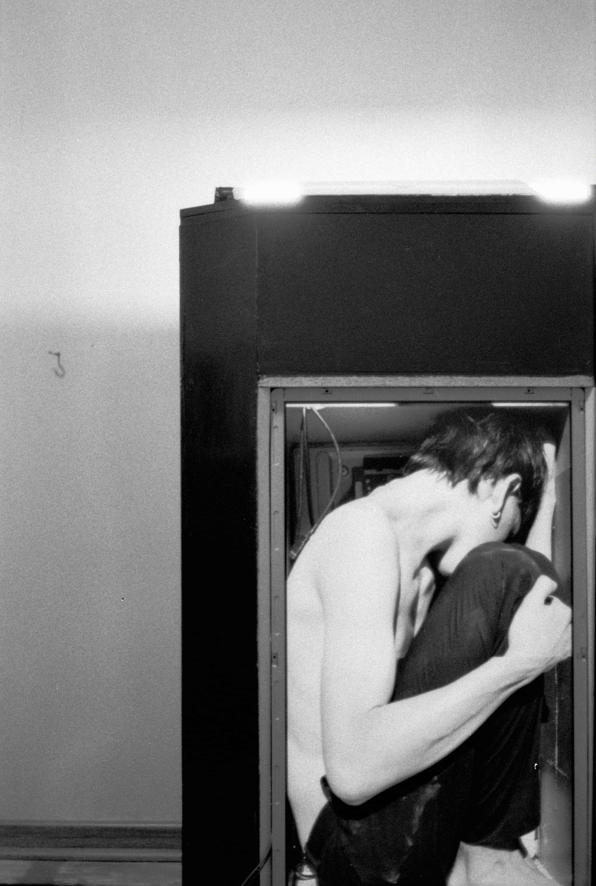
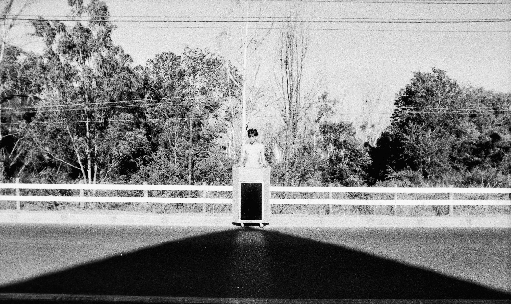

 



2020
La obra consiste en un púlpito (aquellos ornamentos religiosos que se utilizan para la lectura de la biblia en las iglesias) realizado con dos propósitos; ser una escultura y a su vez un objeto performático. La primera de estas funciona en un espacio expositivo y se reproduce una imagen en posición fetal de mi persona haciendo el efecto de como si estuviera dentro del mueble. La segunda de estas se logra gracias a la incorporación de cuatro ruedas en la parte inferior del ornamento y con la realización de performance por una calle de 5 kilómetros en las periferias de Santiago, Chile.
